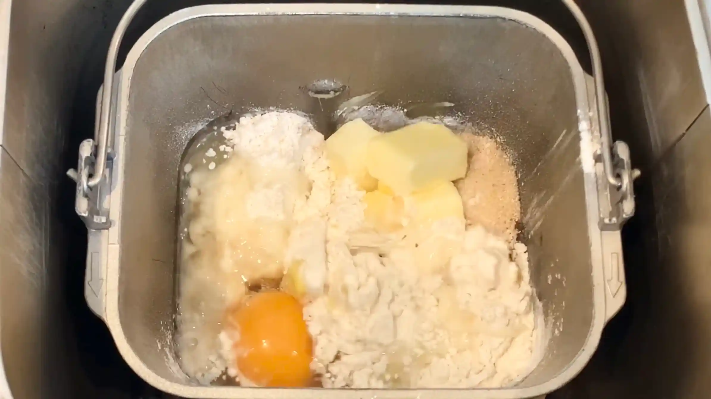
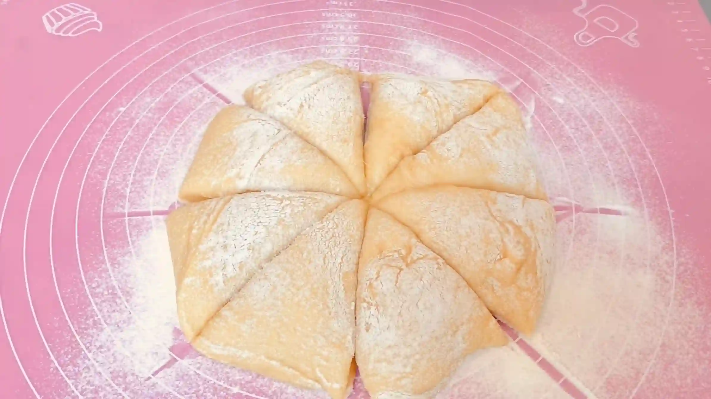
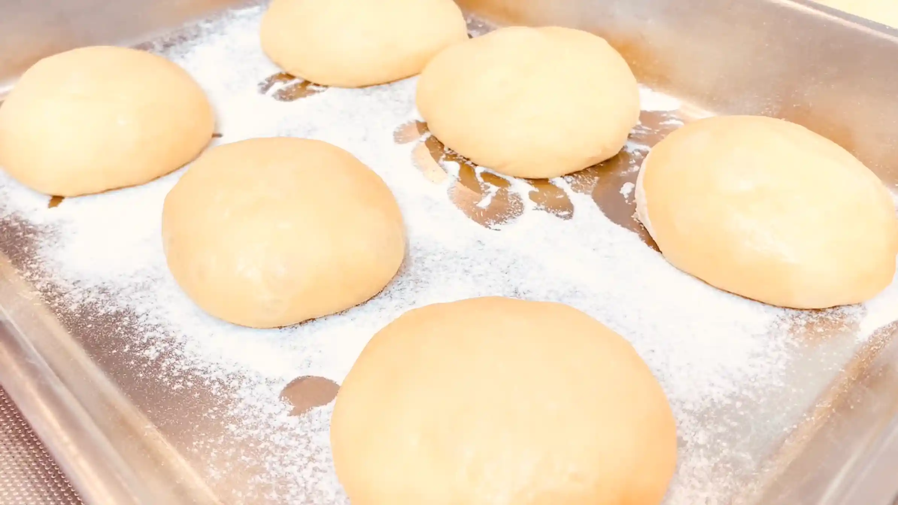
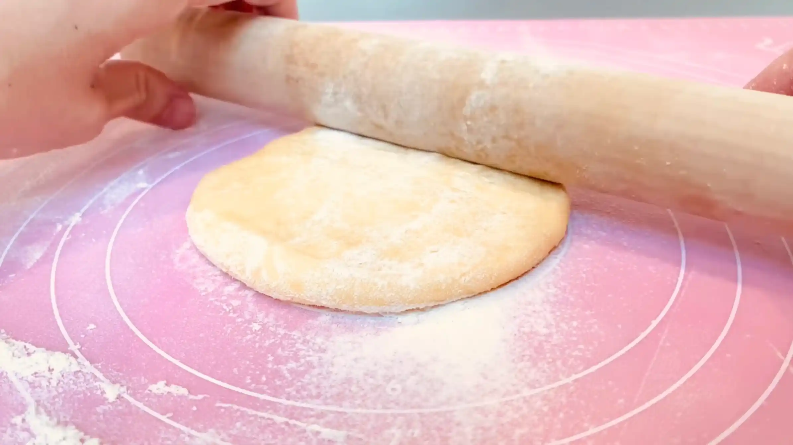
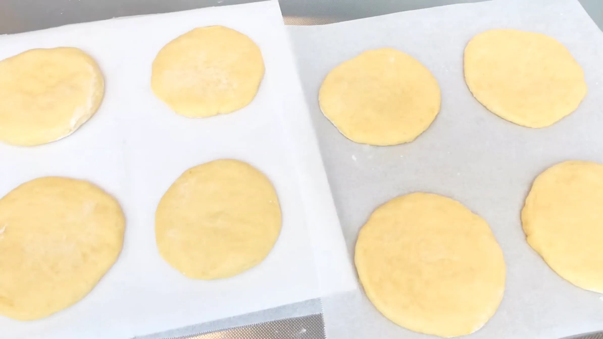
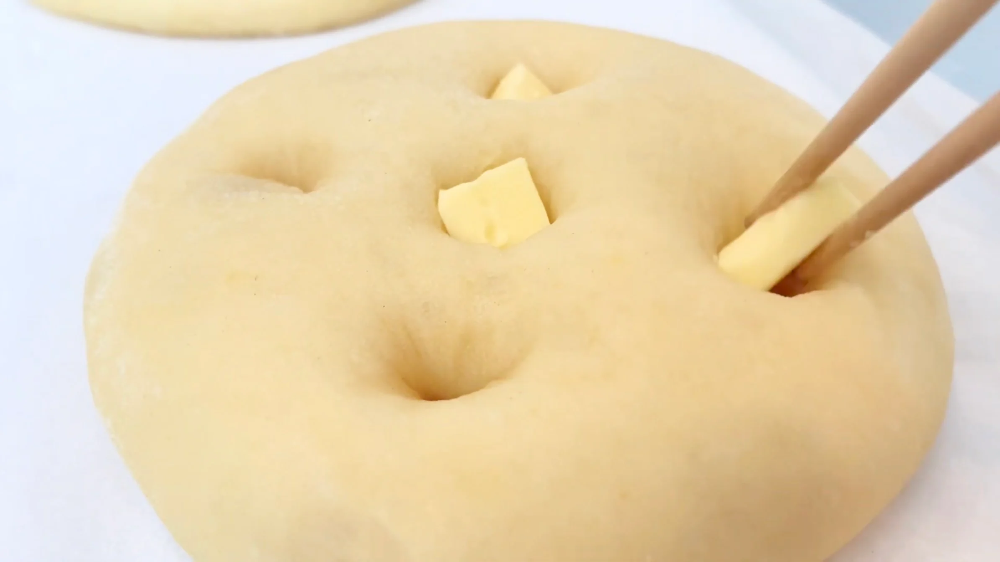
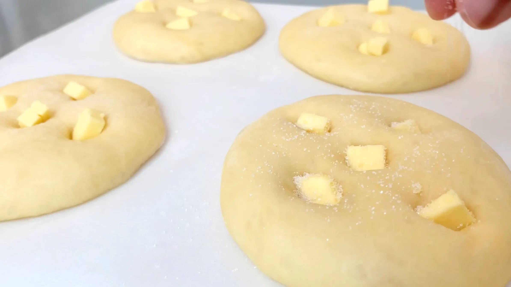
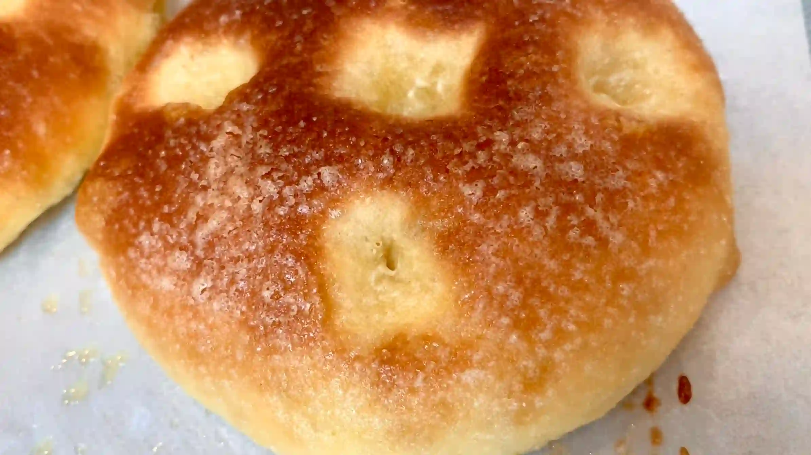

材料 8個分
※粉量を変えると自動計算されます
生地
塗り用・トッピング
作り方
生地
STEP 1
ホームベーカリーで生地を作る
ホームベーカリーに材料をセットして「生地コース」を選べば、生地作りから一次発酵までお任せできます。コースが終わったら、次の作業に進みます。
ホームベーカリーに材料をセットして「生地コース」を選べば、生地作りから一次発酵までお任せできます。コースが終わったら、次の作業に進みます。

STEP 2
生地を取り出し、打ち粉をして8分割する
バターと卵がたっぷり入った生地は、やわらかくベタつきやすいため、打ち粉をしっかりしてスケッパーなどで手早く切り分けます。
バターと卵がたっぷり入った生地は、やわらかくベタつきやすいため、打ち粉をしっかりしてスケッパーなどで手早く切り分けます。

STEP 3
生地を丸めてラップをし、常温で20分おく
分けた生地は、表面がなめらかになるよう軽く丸めます。丸めた生地を休ませる場所にも、くっつかないように打ち粉をしておきます。ここで休ませることで生地の緊張がゆるみ、次の工程で伸ばしやすくなります。
分けた生地は、表面がなめらかになるよう軽く丸めます。丸めた生地を休ませる場所にも、くっつかないように打ち粉をしておきます。ここで休ませることで生地の緊張がゆるみ、次の工程で伸ばしやすくなります。

STEP 4
厚さ5mm程の円形に伸ばす
生地の中央から外側に向かって、全体が均一な厚さになるように伸ばします。生地がめん棒にくっつく場合は、少し打ち粉をしてください。
生地の中央から外側に向かって、全体が均一な厚さになるように伸ばします。生地がめん棒にくっつく場合は、少し打ち粉をしてください。

STEP 5
生地をオーブンシートにのせ、ラップをして常温で60分おく
バターや卵をたっぷり使ったリッチな生地は、一般的なパン生地に比べて発酵がゆっくりになりやすいため、ここでは二次発酵をややしっかりめに行います。60分を目安に、生地がひと回りふっくらするまで発酵させます。時間だけで判断せず、生地の膨らみを確認して次の工程に進みます。
バターや卵をたっぷり使ったリッチな生地は、一般的なパン生地に比べて発酵がゆっくりになりやすいため、ここでは二次発酵をややしっかりめに行います。60分を目安に、生地がひと回りふっくらするまで発酵させます。時間だけで判断せず、生地の膨らみを確認して次の工程に進みます。

STEP 6
天板を入れたオーブンを200℃に予熱する
高温で焼き上げることで、表面を香ばしく仕上げることができます。天板も一緒に予熱しますが、裏返してオーブンに入れておきます。天板を裏返すことで生地を置く位置が少し高くなり、上火に近づくため、表面に焼き色をつけやすくなります。ご家庭のオーブンによって仕様が異なるため、様子を見ながらご調整ください。
高温で焼き上げることで、表面を香ばしく仕上げることができます。天板も一緒に予熱しますが、裏返してオーブンに入れておきます。天板を裏返すことで生地を置く位置が少し高くなり、上火に近づくため、表面に焼き色をつけやすくなります。ご家庭のオーブンによって仕様が異なるため、様子を見ながらご調整ください。
STEP 7
指でくぼみをつけてバターをのせる
指でくぼみをつけておくことで、生地が焼成中に大きく膨らみすぎるのを抑えてくれます。また、上にのせたバターが焼成中に溶けて生地に染み込み、表面を香ばしく焼き上げてくれます。
指でくぼみをつけておくことで、生地が焼成中に大きく膨らみすぎるのを抑えてくれます。また、上にのせたバターが焼成中に溶けて生地に染み込み、表面を香ばしく焼き上げてくれます。

STEP 8
牛乳を塗り、グラニュー糖をトッピングする
表面に牛乳を塗ることで、生地に焼き色がつきやすくなり、香ばしい仕上がりになります。牛乳は刷毛などを使って表面全体に薄く塗り、グラニュー糖をたっぷり散らします。
表面に牛乳を塗ることで、生地に焼き色がつきやすくなり、香ばしい仕上がりになります。牛乳は刷毛などを使って表面全体に薄く塗り、グラニュー糖をたっぷり散らします。

STEP 9
オーブン200℃で15分焼く
我が家のオーブンは小さいため、1回で4つ、計2回に分けて焼きます。2回目の生地の発酵時間が少し長くなりますが、そこまで厳密に考えず気楽に焼いています。表面がこんがりと色づき、底面まで焼けていれば完成です。焼き時間や温度は目安とし、ご家庭のオーブンによってご調整ください。
我が家のオーブンは小さいため、1回で4つ、計2回に分けて焼きます。2回目の生地の発酵時間が少し長くなりますが、そこまで厳密に考えず気楽に焼いています。表面がこんがりと色づき、底面まで焼けていれば完成です。焼き時間や温度は目安とし、ご家庭のオーブンによってご調整ください。

動画でチェック
おいしく作るためのワンポイントコラム
リッチなブリオッシュ生地に、たっぷりのバターとお砂糖を乗せて焼き上げるフランスの伝統菓子パン『タルトシュクレ』！素朴で可愛いフォルムと、カリッとした甘さ、ふんわり軽い食感が魅力です。伝統菓子パンというだけあって、焼きたての美味しさはまさに格別！その魅力を最大限に引き出すための「2つのコツ」をまとめました。
① 無理せず頼る生地作りのコツ
バターがたっぷり入ったブリオッシュ生地は、非常に柔らかくベタつくのが特徴。慣れないうちは手捏ねが難しいため、今回はホームベーカリーで生地を捏ねています。他のパンを作る場合も同様、卵やバターが多く入っているベタつく生地は、ホームベーカリーを活用すると簡単に捏ねることができるのでおすすめです。
② オーブンの癖を掴む焼成のコツ
タルトシュクレは高めの温度で焼き上げ、表面を香ばしく仕上げるのが美味しさの秘密。ただ、我が家のオーブンは下火が強く底が焦げやすいため、今回は天板を裏返して使用しました。天板を裏返すことで生地の位置が少し高くなり、上火に近づいて表面に綺麗な焼き色がつくのに加え、下火から離れて底の焦げ付きを防げます。ご家庭のオーブンの癖に合わせてぜひ参考にしてみてください。
パン屋さんではあまり見かけないため、初めて耳にしたという方も多いかもしれません。ですが、くぼみに乗せたバターとお砂糖がカリカリに焼き上がり、オーブンから漂う甘く香ばしい香りはまさに幸せそのもの！成形も簡単で、初めてのパン作りにもおすすめです。見た目は素朴ですが贅沢で最高に美味しいタルトシュクレ、ぜひ一度味わってみてください。
① 無理せず頼る生地作りのコツ
バターがたっぷり入ったブリオッシュ生地は、非常に柔らかくベタつくのが特徴。慣れないうちは手捏ねが難しいため、今回はホームベーカリーで生地を捏ねています。他のパンを作る場合も同様、卵やバターが多く入っているベタつく生地は、ホームベーカリーを活用すると簡単に捏ねることができるのでおすすめです。
② オーブンの癖を掴む焼成のコツ
タルトシュクレは高めの温度で焼き上げ、表面を香ばしく仕上げるのが美味しさの秘密。ただ、我が家のオーブンは下火が強く底が焦げやすいため、今回は天板を裏返して使用しました。天板を裏返すことで生地の位置が少し高くなり、上火に近づいて表面に綺麗な焼き色がつくのに加え、下火から離れて底の焦げ付きを防げます。ご家庭のオーブンの癖に合わせてぜひ参考にしてみてください。
パン屋さんではあまり見かけないため、初めて耳にしたという方も多いかもしれません。ですが、くぼみに乗せたバターとお砂糖がカリカリに焼き上がり、オーブンから漂う甘く香ばしい香りはまさに幸せそのもの！成形も簡単で、初めてのパン作りにもおすすめです。見た目は素朴ですが贅沢で最高に美味しいタルトシュクレ、ぜひ一度味わってみてください。


リッチなブリオッシュ生地にたっぷりのお砂糖をかけて焼き上げる、フランスの伝統菓子パン『タルトシュクレ』のレシピです。素朴で可愛いフォルムと、甘くて軽い食感が魅力。コラムでは「無理せず頼る生地作りのコツ」「オーブンの癖を掴む焼成のコツ」の2つのポイントをご紹介します。